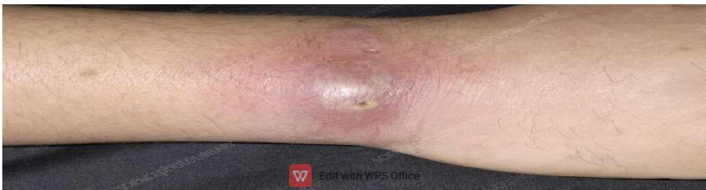
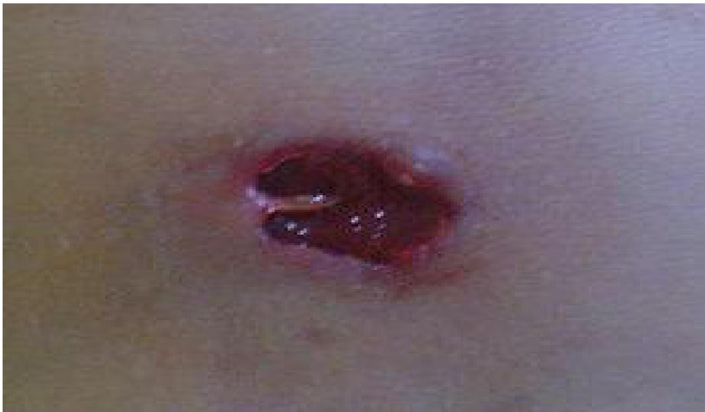
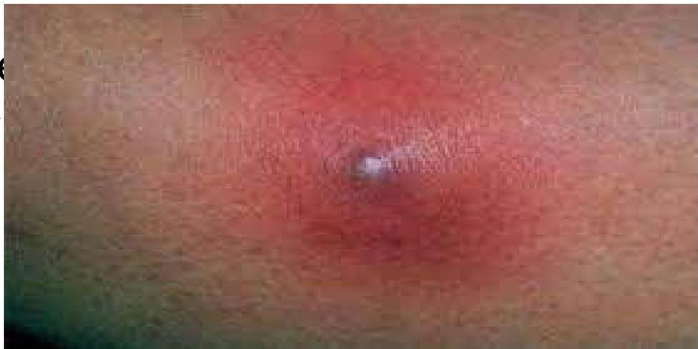
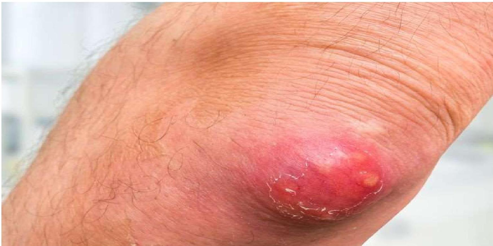
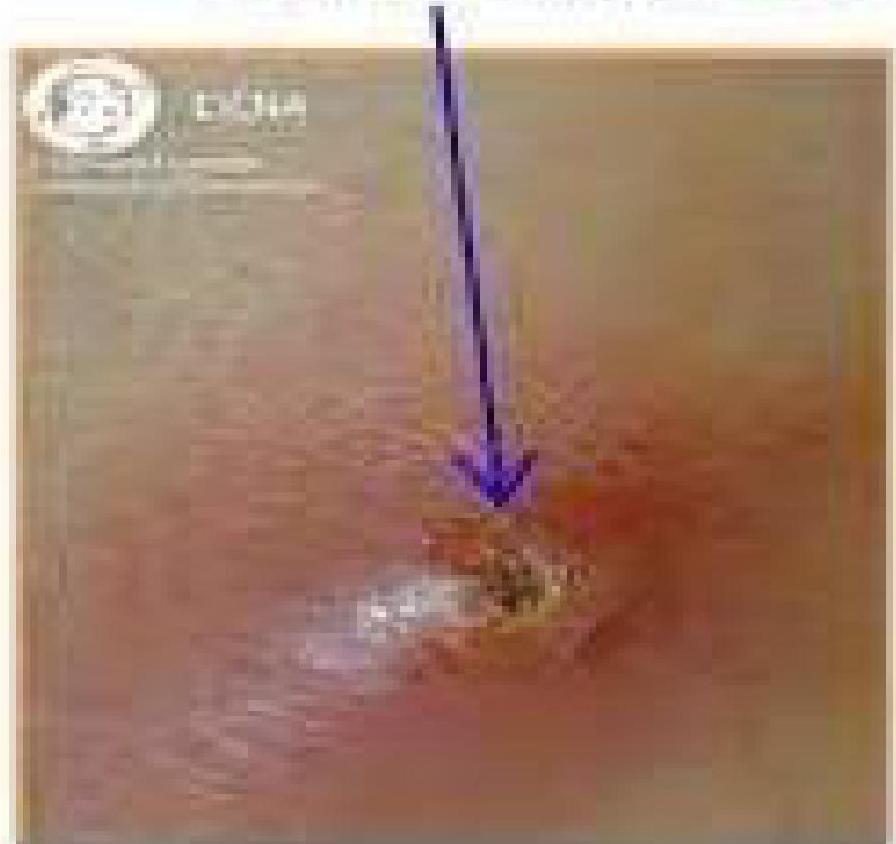
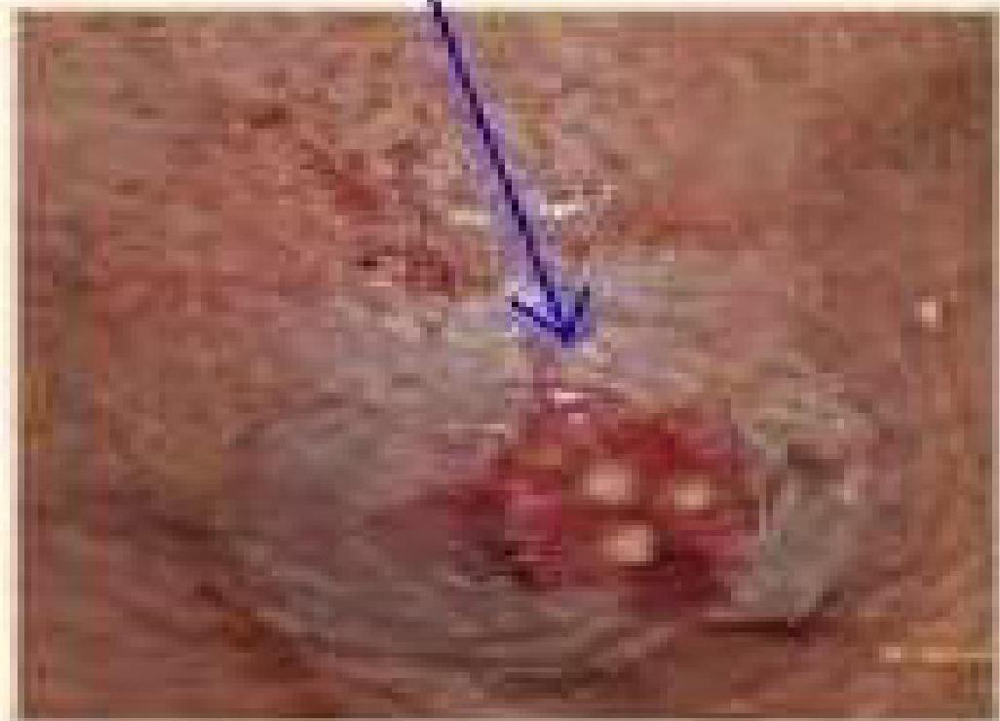

🦠
Topic 04
ABSCESSES & SKIN INFECTIONS
01
Abscess Overview
Definitions
- Definition 1: An abscess is a cavity filled with pus. It contains white blood cells, dead tissue and bacteria.
- Definition 2: localized collection of pus surrounded by inflamed tissue

TYPES OF ABSCESS
Abscesses can develop anywhere in the body.
- Skin abscesses – which develop under the skin
- Internal abscesses – which develop inside the body, in an organ or in the spaces between organs
-
Incisional abscess - An incisional abscess is one that develops as a complication secondary to a surgical incision.
- It presents as redness and warmth at the margins of the incision with purulent drainage from it.
- If the diagnosis is uncertain, an abscess should be aspirated with a needle, and the aspirated pus be presented for culture and sensitivity.
Other abscesses
- Anorectal abscess – a build-up of pus in the rectum and anus
- Bartholin's abscess – a build-up of pus inside one of the Bartholin's glands, which are found on each side of the opening of the vaginal orifice.
- brain abscess – a rare but potentially life-threatening build-up of pus inside the skull (cranium)
- Dental abscess – a build-up of pus under a tooth or in the supporting gum and bone
- Quinsy (peritonsillar abscess) – a build-up of pus between one of the tonsils and the wall of the throat
02
Pathophysiology & Causes
Causes of abscesses
- Most abscesses are caused by a bacterial infection, parasites, or foreign substances, but bacteria is most common cause.
- When bacteria enter the body, the immune system sends infection-fighting white blood cells to the affected area.
- As the white blood cells attack the bacteria, some nearby tissues die, creating a space which then fills with pus to form an abscess. The pus contains a mixture of dead tissue, white blood cells and bacteria.
- Internal abscesses often develop as a complication of an existing condition, such as an infection elsewhere in your body. For example, if the appendix bursts as a result of appendicitis, bacteria can spread inside the abdomen and cause an abscess to form.
- The most common bacterial organism responsible for the development of skin abscesses is Staphylococcus aureus
- With the emergence of methicillin-resistant Staphylococcus aureus (MRSA), health care providers must now consider this organism as the possible cause when a skin abscess is encountered.
Pathophysiology
- Upon entry of the organisms or foreign materials, Staphylococcus aureus for example kills the local cells, resulting in the release of cytokines.
- The cytokines trigger an inflammatory response, which draws large numbers of white blood cells to the area and increases the regional blood flow.
- The final structure of the abscess is an abscess wall, or capsule, that is formed by the adjacent healthy cells in an attempt to keep the pus from infecting neighboring structures.
- However, such encapsulation tends to prevent immune cells from attacking bacteria in the pus, or from reaching the causative organism or foreign object.
03
Signs & Symptoms
Skin abscesses
- A skin abscess often appears as a swollen, pus-filled lump under the surface of the skin.
- Body malaise
- Other symptoms of an infection, such as a fever, chills.
- warmth
- redness (in the affected area)
- A boil is a common example of a skin abscess.
Internal abscesses
- Discomfort in the area of the abscess
- Fever
- Increased sweating
- Vomiting
- Chills
- Pain or swelling in the abdomen
- Loss of appetite & Weight loss
- Extreme tiredness (fatigue)
- Diarrhoea or constipation
Risk factors
You're at increased risk for this bacterial infection if you have:
- Close contact with an individual who has a staph infection, (which is why these infections are more common in hospitals)
- A chronic skin disease, like acne or eczema
- Diabetes
- A weakened immune system, which can be caused by infections such as HIV
- Poor hygiene habits
Infected hair follicles (folliculitis)
- Infected hair follicles, or folliculitis, may cause abscesses to form in the follicle. Follicles can become infected if the hair within the follicle is trapped and unable to break through the skin, as can happen after shaving.
- Trapped hair follicles are commonly known as ingrown hairs. Ingrown hairs can set the stage for an infection. Abscesses that are on or in a hair follicle will often contain this ingrown hair.
- Folliculitis may also occur after spending time in an inadequately chlorinated pool or hot tub.
Difference between cyst and abscess
| Feature | CYST | ABSCESS |
|---|---|---|
| Definition | A closed sac that develops abnormally in some body structure | A pus-filled infection in the body caused by bacteria or fungi |
| Symptoms | Grows slowly, usually not painful unless enlarged | Pain, redness, swelling, symptoms elsewhere in body |
| Infection Status | Not infected (unless it becomes an abscess) | Infected |
| Origin | Can become infected to form an abscess | Can form on its own, doesn't need to begin as a cyst |
04
Management
Investigations
-
Medical history:
- How long the abscess has been present
- If they recall any injury to that area
- What drugs one may be taking
- If they have any allergies
- If they had a fever
- Physical exam: Examine the abscess and surrounding areas.
- Culture: Take a culture or a small amount of fluid from the abscess to test for the presence of bacteria
Treatment Options
The main treatment options include antibiotics, drainage procedure, warm compress, and surgery.
1. Surgery (Incision and drainage)
- If the skin abscess needs draining, the patient will have a minor surgical operation carried out under anesthesia—usually a local anesthetic
- During the procedure, an incision is made in the abscess, to allow the pus to drain out. A sample of pus may also be taken for testing.
- Once all of the pus has been removed, the resulting hole that is left by the abscess is cleaned using sterile saline (a salt solution).
- The abscess will be left open but covered with a wound dressing, so if any more pus is produced it can drain away easily.

2. Percutaneous drainage
- If the internal abscess is small, the surgeon may be able to drain it using a fine needle.
- The surgeon may use ultrasound scans or computerised tomography (CT) scans to help guide the needle into the right place.
- Once the abscess has been located, the pus is drained using the needle. A small incision may be made on the skin over the abscess, then insert a thin plastic tube called a drainage catheter into it.
- The catheter allows the pus to drain out into a bag and may have to be left in place for up to a week.
Indication for Surgery (Internal Abscess)
You may need to undergo surgery if:
- Your internal abscess is too large to be drained with a needle
- A needle can't get to the abscess safely
- Needle drainage hasn't been effective in removing all of the pus
Prevention
- Proper hygiene is the best way to avoid infection.
- Keep cuts and wounds clean, dry, and covered to protect them from microorganisms.
- Avoid sharing clothing, towels, razors, or bed linens with anyone else.
- When these items get dirty, wash them separately in hot water.
- Wash your hands well and often using soap and water for at least 20 seconds each time. It's OK to use alcohol-based instant hand sanitizers or wipes if you're not near any soap and water.
05
Carbuncles & Furuncles
Definitions
Furuncle (Boil)
Begins as a painful infection of a single hair follicle. They can grow to be larger than a golf ball.

Carbuncle
A cluster of boils that have multiple pus "heads." They’re tender and painful, and cause a severe infection which could leave a scar. Also known as Staph skin infection or Carbunculosis.



Clinical Features
- Causes: Staphylococcus aureus bacteria enter the hair follicles.
- Portal of Entry: Insect bites, broken skin.
- Location: Face, back of neck, armpits, thighs, buttocks. Moist parts of the body are particularly susceptible.
Risk Factors
- Close contact with someone who has a carbuncle
- Poor hygiene
- Diabetes
- Weak immune system
- Skin conditions (Psoriasis, eczema, acne)
- Kidney disease
Management
- Warm compresses (help boil rupture and drain).
- Warn patient not to squeeze or incise the lesion.
- Systemic antibiotics (cloxacillin, erythromycin).
- Bed Rest especially for genital area furuncles.
- For severe pain: codeine, morphine.
- Incision and drainage: For larger boils and carbuncles when fluctuant.
Complications
Rarely, bacteria can enter bloodstream causing sepsis, which can lead to infections like endocarditis (heart) and osteomyelitis (bone).
Comparison: Furuncle vs Carbuncle
| Feature | Furuncle (Boil) | Carbuncle |
|---|---|---|
| Definition | Painful infection of a single hair follicle | Cluster of boils (infected hair follicles) |
| Depth | Not as deep, affects follicle and surrounding tissue | Deeper skin infection, affects deeper layers |
| Presentation | Single red bump | Multiple pus "heads" (multiple pointing) |
| Outcome | May heal without scar within 2 days to 3 weeks | Takes longer to develop/resolve, often leaves a scar |